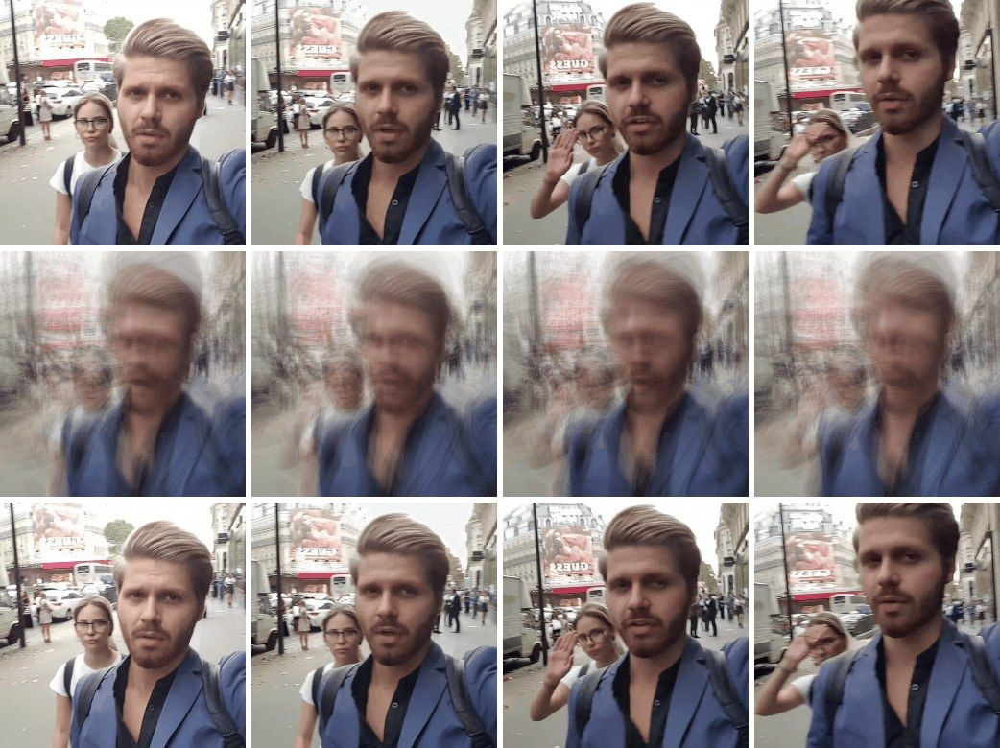
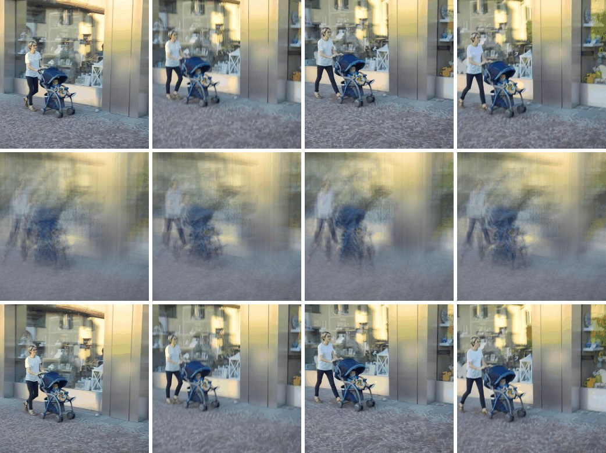

INFERENCE WALKTHROUGH / NOT A REPRODUCTION
时间一致度几乎等于 GT，
不是靠冻结帧换来的。
官方代码 + ADM 256 无条件权重，跑仓库自带三段 16 帧样例视频，退化即官方硬编码的「50% 随机缺失 + 时间维 13 帧盒式模糊」。重建 PSNR 35.46 / 32.31 / 33.74 dB，相对退化输入提升 14–19 dB；相邻帧差幅度与 GT 几乎相同（0.15–0.23 vs 0.15–0.24），说明时间一致性不是靠复制帧。三段是作者演示片段，不能外推到 DAVIS 全量，也没有重算论文表格。
跑了什么
仓库 svi-diffusion/codes @ 301e023，唯一采样脚本 scripts/TimeDeconv.py（gaussian_diffusion.time_deconv_sample_loop），入口 sample.sh。权重 256x256_diffusion_uncond.pt（openaipublic，2,147 MB）。数据用仓库自带 sample/sample_data/video_00{1,2,3}/split_001.npy（每段 12 MB，float32 (3,16,256,256)）。
脚本内部参数即论文默认：T_sampling=20（20 个扩散步）、eta=0.15、每步 CG n_inner=5、A = temporal_blur(·, 13)（时间维盒式核），外加 generate_random_mask(shape, 0.5)。运行量：3 段、每段 16 帧、20 步采样；3 段共 98.6 s（约 13 s/段，1.5 it/s），显存峰值 12,437 MiB（fp16 权重 + 16 帧 batch）。
环境与改动
conda 前缀环境 env/（python 3.10.22），torch 2.1.2+cu118 / torchvision 0.16.2 / numpy 1.26.4 / scipy / einops / blobfile / tqdm / pillow。当天清华 PyPI 镜像只有 ~65 KB/s，torch==2.4.1 两次都下不完 wheel，于是把本机已有项目环境（ddrm/env）的 torch/torchvision/triton 复制进本环境（cp -a，非软链，4.0 GB 独立副本），其余小依赖正常 pip 装。
唯一代码改动：guided_diffusion/dist_util.py 把 mpi4py 改成 try/except + 单进程 dummy comm，并让 setup_dist() 在无 MPI 时直接返回（原先会把 CUDA_VISIBLE_DEVICES 覆盖成 0）。未改 TimeDeconv.py 与任何算法超参；另加 code/models → ../ckpt 软链（脚本写死 models/）。
结果
| 视频（16 帧） | 重建 PSNR | 退化输入 PSNR | 重建 SSIM | 退化 SSIM | 相邻帧差（重建 vs GT） |
|---|---|---|---|---|---|
| video_001 | 35.46 | 16.06 | 0.9863 | 0.5123 | 0.1935 vs 0.1991 |
| video_002 | 32.31 | 16.46 | 0.9777 | 0.5888 | 0.2325 vs 0.2380 |
| video_003 | 33.74 | 18.20 | 0.9699 | 0.5258 | 0.1505 vs 0.1578 |
指标由 eval_gifs.py 从 8-bit GIF 反算（脚本本身不存 npy），比 float 输出略低；没有 LPIPS/FVD。三段是作者随仓库提供的演示片段，PSNR 偏高属正常。
读法：50% 随机掩膜的孔洞被填平、时间模糊被反解；相邻帧差与 GT 几乎一致，说明输出没有靠「冻结帧」换取时间一致，这是论文「batch-consistent 噪声同步」主张在走查层面的直接体现。
样例


没跑的部分与局限
- 未下载 DAVIS：没有论文表格口径的 PSNR/SSIM/LPIPS/FVD（论文是 DAVIS 338 段 16 帧样本）。
- 只跑了复合退化：官方
sample.sh硬编码「50% 掩码 + 时间盒式核 13」，没有单独跑时间 PSF k=7 / k=13 / 高斯 PSF，也没有 4× SR 与盲逆问题。 - 指标从 GIF 反算：8 bit 量化会系统性压低 PSNR；无感知指标。
- 环境是复制而非安装：torch 目录从另一个项目复制而来，版本可复现但安装路径不可复现。
文件位置
| 路径 | 内容 |
|---|---|
/data1/kxchen/infer-repro/video-inverse/code | 官方代码 @ 301e023 |
.../code/results/gif/00{1,2,3}/ | target / measurement / sample.gif |
.../ckpt/256x256_diffusion_uncond.pt | ADM 256 无条件权重（2,147 MB） |
.../RECORD.md | 完整走查记录与数字出处 |
.../out/atlas/svi-*.jpg | 本页帧条拼图 |
来源
- SVI 论文（arXiv:2409.02574，ICLR 2025）与官方仓库。
- 权重：ADM 256×256 无条件模型。
- 本页数字全部来自
/data1/kxchen/infer-repro/video-inverse/RECORD.md与eval_gifs.py的输出。 - 明确声明：小样本推理走查，不等同论文指标。